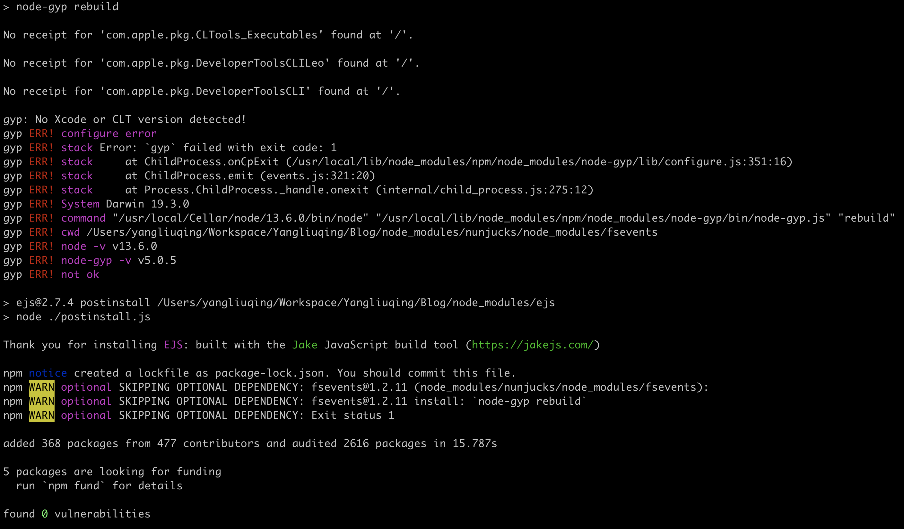
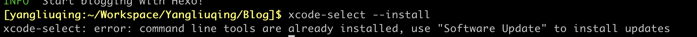
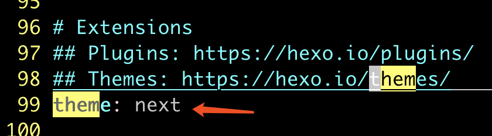
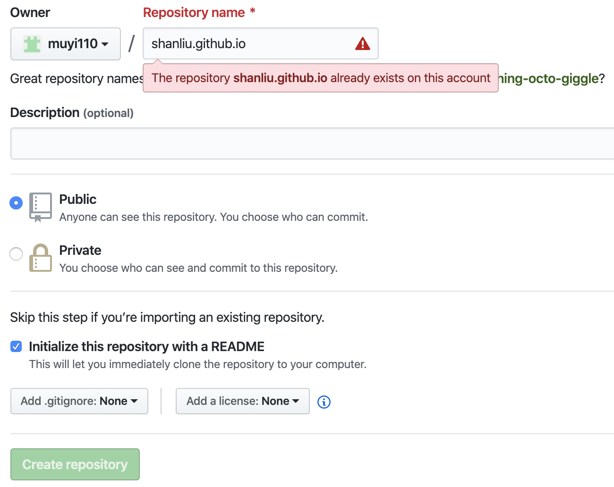
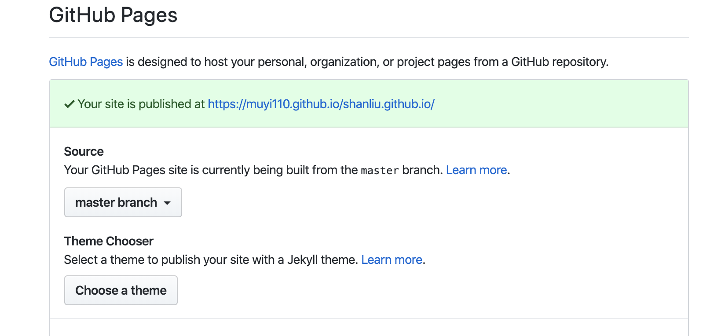
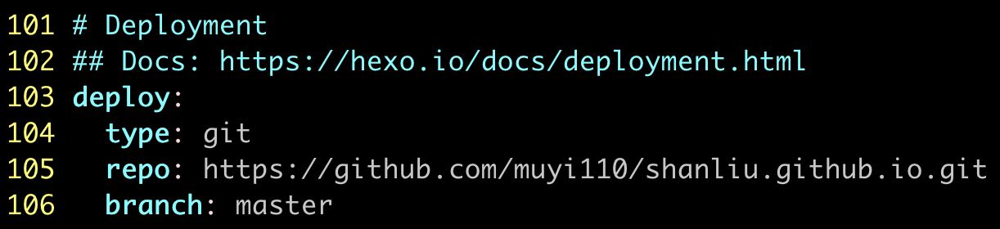
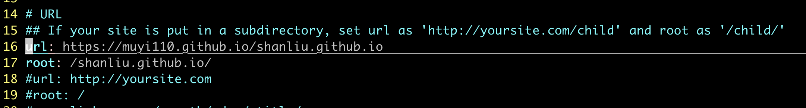

此博客记录了在mac系统下基于hexo+github搭建个人博客的过程及一些错误处理
<! – more –>
准备工作
- 安装node.js（默认git已经安装）
1 | brew install node |
- 安装hexo
1 | npm install -g hexo-cli |
创建本地博客
- 在本地新建一个目录Blog（名字随意），并切换到新建的目录下
1 | mkdir Blog |
- 初始化
1 | hexo init |
此时出现错误如下图所示根据网上教程，利用如下命令修护
1 | xcode-select --install |
继续报错如下继续运行如下命令，弹出的窗点击确定
1 | sudo rm -rf $(xcode-select -print-path) (此命令正常什么都不输出) |
搞定~
- 编译和本地预览
1 | hexo g |
- 设置next主题（在Blog文件下打开终端）
1 | git clone https://github.com/theme-next/hexo-theme-next themes/next |
打开站点配置文件
_config.yml修改主题为next打开
themes/next/_config.yml可以配置next主题
1 | 106 # Schemes |
- 查看效果
1 | hexo clean |
将博客部署到github上
在
github上创建一个新项目new respository进入
setting进入下拉找到Github pages将
hexo内容部署到github上，打开站点配置文件_config.yml修改如下安装命令
1 | npm install hexo-deployer-git --save |
- 分发
github上
1 | hexo clean |
其它
遇到github显示不出来东西，修改站点配置文件_config.yml